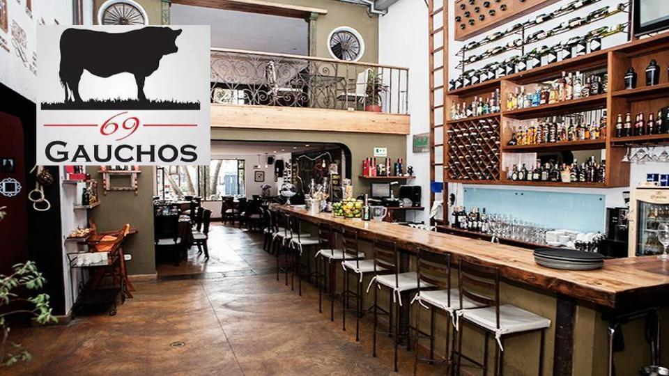
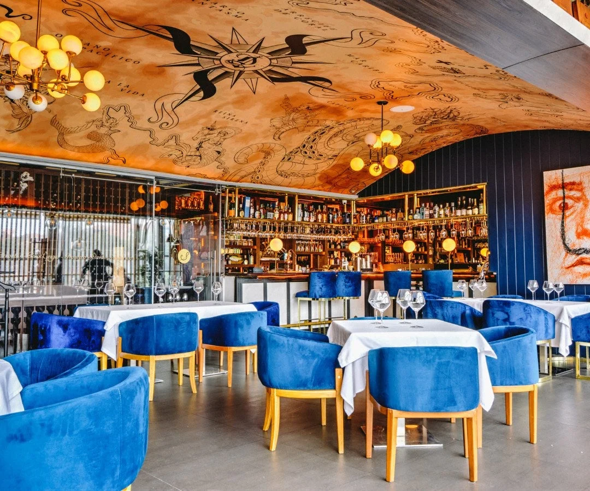
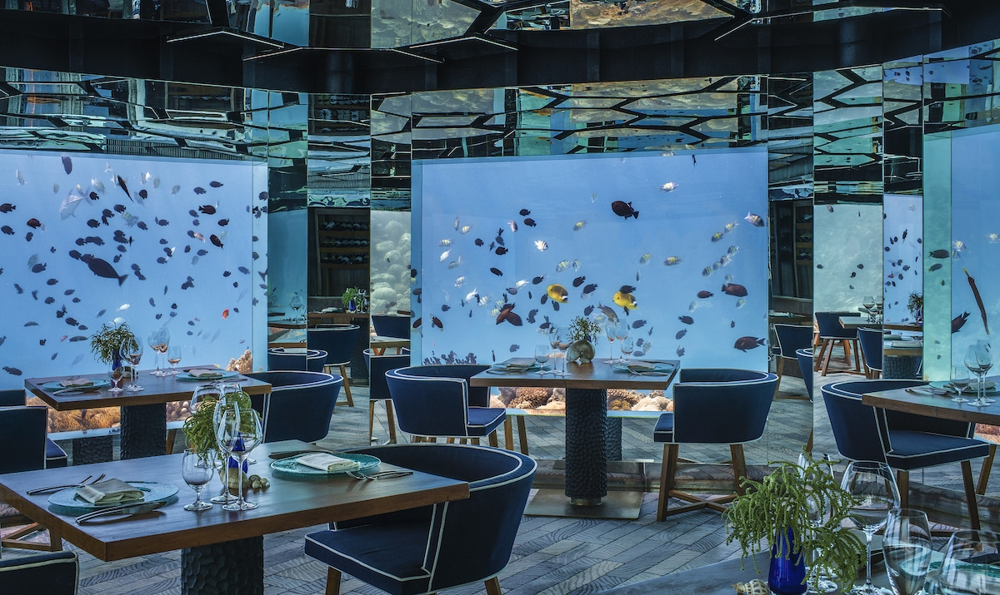

Restaurante El Argentino
El consumo del cafe trae beneficios favorables para la salud del ser humano.

El café es uno de los productos agrícolas de mayor importancia
económica a nivel mundial, genera ingresos anuales mayores a
USD $15 mil millones para los países exportadores, y brinda una
fuente de trabajo a más de 20 millones de personas en el mundo.
Restaurante OCAD Club
Los avances simbolizan el crecimiento de la sociedad.

la Teoría General de Sistemas (TGS) se presenta como una
forma sistemática y científica de aproximación y representación
de la realidad y, al mismo tiempo, como una orientación hacia una
práctica estimulante para formas de trabajo transdisciplinarias.
Restaurante Marino
El conocimiento real yace dentro de los escritos antiguos.

Un libro es una obra compuesta por un conjunto de hojas de
papel o de otro material, encuadernadas y protegidas con una
tapa o cubierta, que forman un volumen.
Restaurante Mexicano
El poder la innovación se encuentra en los curiosos.

proceso mediante el cual un dominio, producto o servicio se
renueva y actualiza por medio de la aplicación de nuevos procesos,
la introducción de nuevas técnicas o el establecimiento de ideas
exitosas, esto con el fin de crear un nuevo valor.